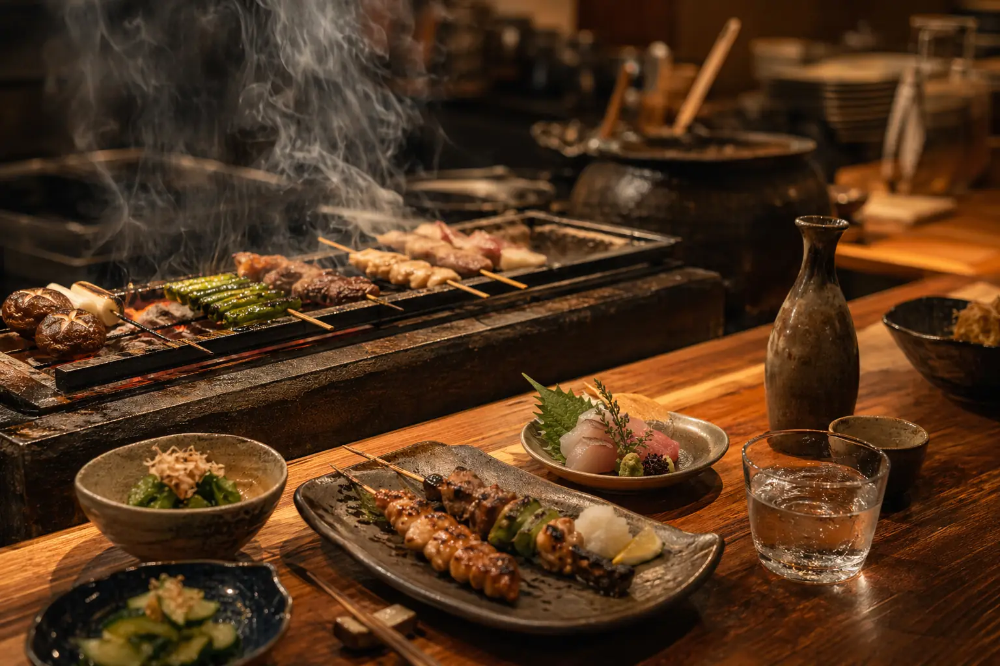
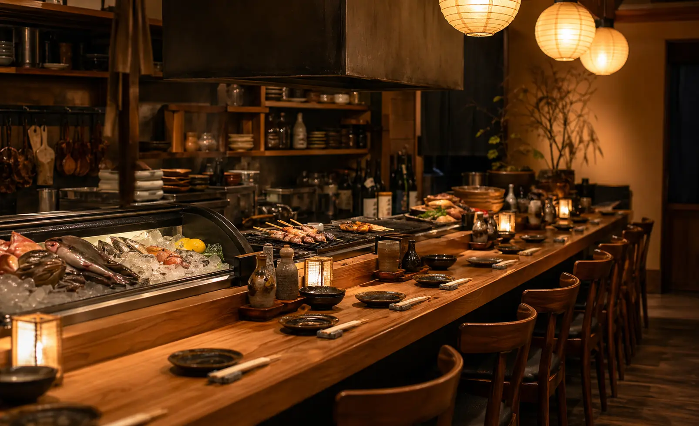
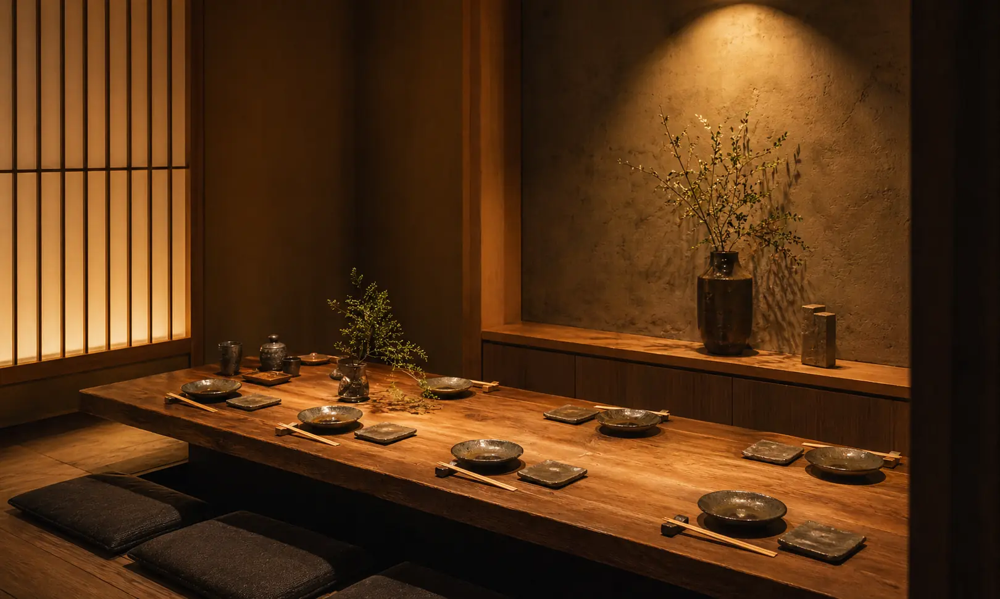
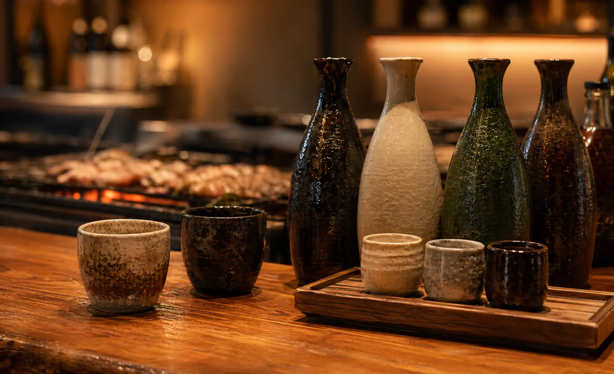
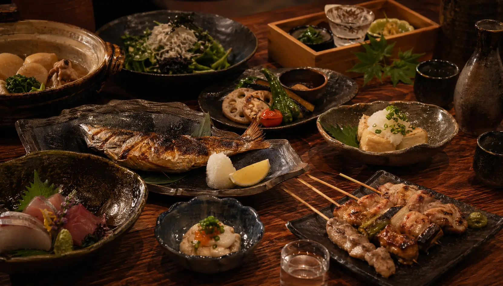

地鶏もも炭火焼き
皮目はぱりっと、身はしっとり。柚子胡椒と粗塩で。
¥1,480
Shinjuku Robata Dining
新宿三丁目の路地に灯る小さな炉端居酒屋。焼き台から届く香ばしさ、旬魚の刺身、季節の小皿、冷えた地酒で、肩の力がほどける一杯をどうぞ。

焼き台に火が入り、暖簾をかける時間。
カウンター、テーブル、半個室をご用意。
料理に合わせたい日本酒と焼酎を常備。

Our Robata
炉端 さくらの主役は、炭火でじっくり火を入れる魚と野菜。表面は香ばしく、中はふっくら。焼き台を囲むカウンターでは、職人が串を返す音や立ちのぼる香りまで楽しめます。
Seasonal Plate
春は山菜、夏は鮎、秋は茸、冬は牡蠣。仕入れに合わせて日替わりの短冊メニューをご用意しています。
Course
歓送迎会、週末の集まり、会社帰りの飲み会に。飲み放題付きコースや、料理中心の会食コースも承ります。
前菜三種、旬魚刺身、地鶏炭火焼き、季節野菜、土鍋ご飯、甘味。
¥5,500刺身盛り、名物ほっけ、串焼き、揚げ物、締めの蕎麦。120分飲み放題付き。
¥6,800仕入れに合わせた旬魚、和牛炭火焼き、料理長おすすめの日本酒一杯付き。
¥8,800Seats

半個室 4-8名
地酒カウンター
宴会テーブル 最大24名Drink
日本酒は常時36種。すっきり辛口、米の旨みがある純米、香りの良い吟醸まで、料理に合わせて一杯からお選びいただけます。
Access
新宿の賑わいから少し入った路地の地下1階。暖簾と炭の香りを目印にお越しください。
Reservation
当日の空席確認、コースのご相談、個室のご希望はお電話で承ります。週末は早めのご予約がおすすめです。